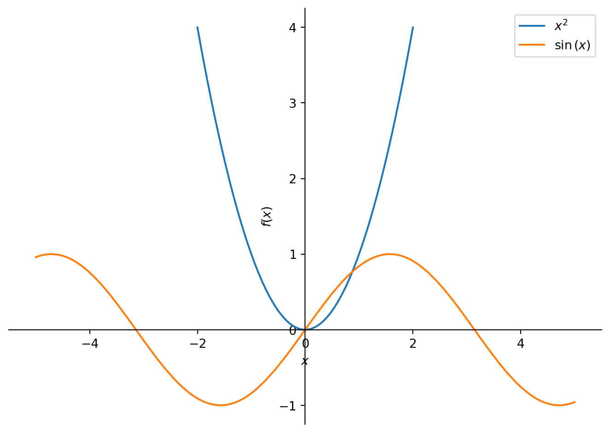
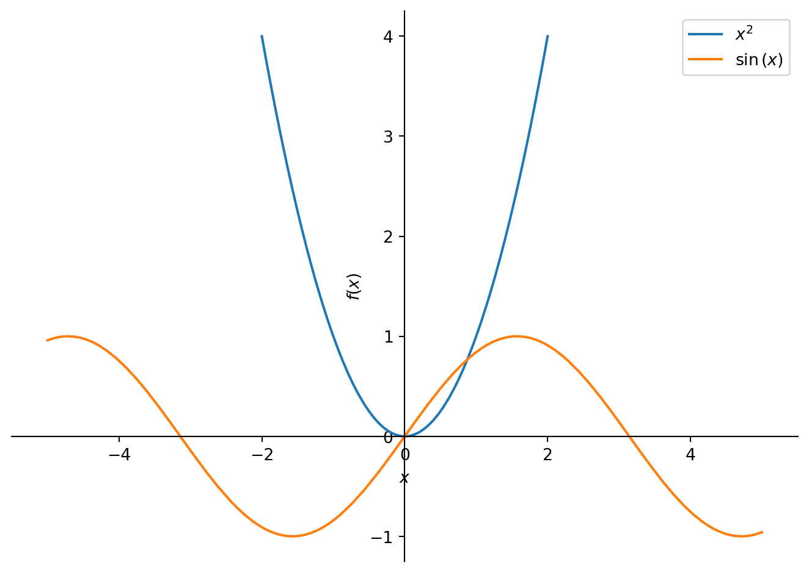

from sympy import symbols, sin
from sympy.plotting import plot
x = symbols('x')
p1 = plot(x**2, (x, -2, 2), legend=True, show=False)
p2 = plot(sin(x), (x, -5, 5), legend=True, show=False)
p1.extend(p2)
p1.show()
Mingyu Jeon
October 20, 2023
If you know the mathematical formula of a 1D scalar function y=f(x), then I believe the best tool for drawing 1D scalar functions is Desmos. However, you can also plot the functions in Python using various visualization libraries. In this post, I will draw 1D scalar functions y=x^2 and y=\sin(x) using basic features of these libraries. Keep in mind that there are many advanced features not covered here, so for more information, refer to the official document of the respective library.
SymPy is a Python library for symbolic mathematics.
Even though SymPy’s strength lies in symbolic computations, it can also be used for drawing 1D scalar functions, see Figure 1.
from sympy import symbols, sin
from sympy.plotting import plot
x = symbols('x')
p1 = plot(x**2, (x, -2, 2), legend=True, show=False)
p2 = plot(sin(x), (x, -5, 5), legend=True, show=False)
p1.extend(p2)
p1.show()
The graph depicts y=x^2 for x \in [-2, 2] and y=\sin(x) for x \in [-5, 5]. The purpose of using different ranges for x is to display both graphs in a single figure without one being much smaller than the other. This is because the values of x^2 rapidly increases as |x| increases, while |\sin(x)| \leq 1 always.
NumPy is the fundamental package for scientific computing with Python.
Other visualization libraries usually don’t understand symbolic representation of a function. They just draw (x, y) points in a coordinate plane. Therefore, before you use them, you have to generate (x, y) points using NumPy.
np.linspace(start, stop, num) creates num evenly spaced numbers within a closed interval [start, stop]. So, x1 is an array containing 100 evenly spaced numbers within the interval [-2, 2], and x2 is the same array but within the interval [-5, 5].
array([-2. , -1.95959596, -1.91919192, -1.87878788, -1.83838384,
-1.7979798 , -1.75757576, -1.71717172, -1.67676768, -1.63636364,
-1.5959596 , -1.55555556, -1.51515152, -1.47474747, -1.43434343,
-1.39393939, -1.35353535, -1.31313131, -1.27272727, -1.23232323,
-1.19191919, -1.15151515, -1.11111111, -1.07070707, -1.03030303,
-0.98989899, -0.94949495, -0.90909091, -0.86868687, -0.82828283,
-0.78787879, -0.74747475, -0.70707071, -0.66666667, -0.62626263,
-0.58585859, -0.54545455, -0.50505051, -0.46464646, -0.42424242,
-0.38383838, -0.34343434, -0.3030303 , -0.26262626, -0.22222222,
-0.18181818, -0.14141414, -0.1010101 , -0.06060606, -0.02020202,
0.02020202, 0.06060606, 0.1010101 , 0.14141414, 0.18181818,
0.22222222, 0.26262626, 0.3030303 , 0.34343434, 0.38383838,
0.42424242, 0.46464646, 0.50505051, 0.54545455, 0.58585859,
0.62626263, 0.66666667, 0.70707071, 0.74747475, 0.78787879,
0.82828283, 0.86868687, 0.90909091, 0.94949495, 0.98989899,
1.03030303, 1.07070707, 1.11111111, 1.15151515, 1.19191919,
1.23232323, 1.27272727, 1.31313131, 1.35353535, 1.39393939,
1.43434343, 1.47474747, 1.51515152, 1.55555556, 1.5959596 ,
1.63636364, 1.67676768, 1.71717172, 1.75757576, 1.7979798 ,
1.83838384, 1.87878788, 1.91919192, 1.95959596, 2. ])\Delta x for this array is (2 - (-2)) / (100 - 1) = 0.\overline{04}
array([-5. , -4.8989899 , -4.7979798 , -4.6969697 , -4.5959596 ,
-4.49494949, -4.39393939, -4.29292929, -4.19191919, -4.09090909,
-3.98989899, -3.88888889, -3.78787879, -3.68686869, -3.58585859,
-3.48484848, -3.38383838, -3.28282828, -3.18181818, -3.08080808,
-2.97979798, -2.87878788, -2.77777778, -2.67676768, -2.57575758,
-2.47474747, -2.37373737, -2.27272727, -2.17171717, -2.07070707,
-1.96969697, -1.86868687, -1.76767677, -1.66666667, -1.56565657,
-1.46464646, -1.36363636, -1.26262626, -1.16161616, -1.06060606,
-0.95959596, -0.85858586, -0.75757576, -0.65656566, -0.55555556,
-0.45454545, -0.35353535, -0.25252525, -0.15151515, -0.05050505,
0.05050505, 0.15151515, 0.25252525, 0.35353535, 0.45454545,
0.55555556, 0.65656566, 0.75757576, 0.85858586, 0.95959596,
1.06060606, 1.16161616, 1.26262626, 1.36363636, 1.46464646,
1.56565657, 1.66666667, 1.76767677, 1.86868687, 1.96969697,
2.07070707, 2.17171717, 2.27272727, 2.37373737, 2.47474747,
2.57575758, 2.67676768, 2.77777778, 2.87878788, 2.97979798,
3.08080808, 3.18181818, 3.28282828, 3.38383838, 3.48484848,
3.58585859, 3.68686869, 3.78787879, 3.88888889, 3.98989899,
4.09090909, 4.19191919, 4.29292929, 4.39393939, 4.49494949,
4.5959596 , 4.6969697 , 4.7979798 , 4.8989899 , 5. ])\Delta x for this array is (5 - (-5)) / (100 - 1) = 0.\overline{10}
(x1, y1) points are used to draw the graph of y=x^2, while (x2, y2) points are used for the graph of y=\sin(x).
Matplotlib is a comprehensive library for creating static, animated, and interactive visualizations in Python.
Matplotlib is one of the most popular visualization libraries in Python, see Figure 2.
pandas is a fast, powerful, flexible and easy to use open source data analysis and manipulation tool, built on top of the Python programming language.
Since pandas is a great data analysis tool in Python, it can used for drawing graphs, see Figure 3.
Plotly is a technical computing company headquartered in Montreal, Quebec, that develops online data analytics and visualization tools. Plotly provides online graphing, analytics, and statistics tools for individuals and collaboration, as well as scientific graphing libraries for Python, R, MATLAB, Perl, Julia, Arduino, JavaScript and REST.
Plotly is a useful tool for creating interactive plots, see Figure 4.